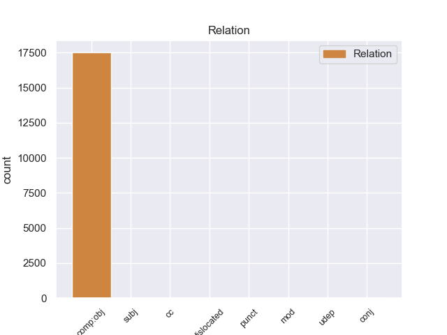
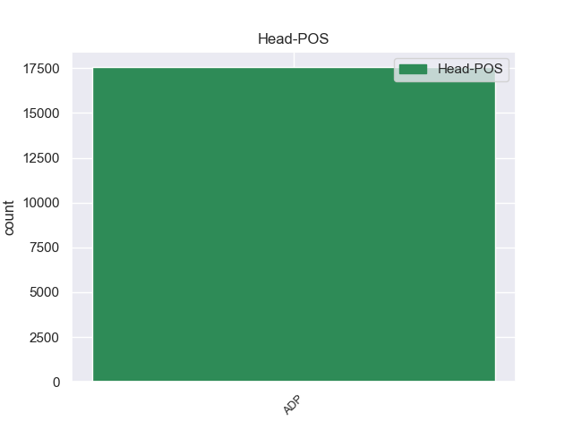
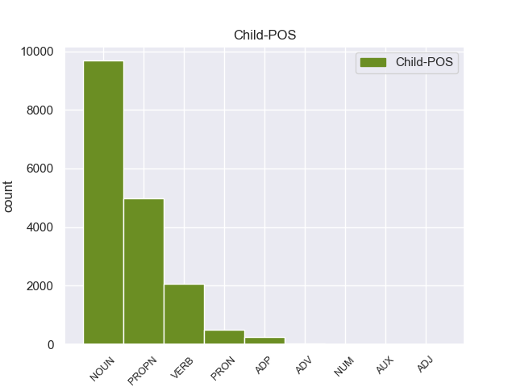

Distribution of features within this leaf



Agreement Rules sorted by frequency.
When the head token is ADP and the dependent token is NOUN.
1 दलाई _ _ _ _ 0 _ _ _
2 लामा _ _ _ _ 0 _ _ _
3 ने _ _ _ _ 0 _ _ _
4 भारत _ _ _ _ 0 _ _ _
5 और _ _ _ _ 0 _ _ _
6 चीन _ _ _ _ 0 _ _ _
7 के _ _ _ _ 0 _ _ _
8 रिश्ते _ _ _ _ 0 _ _ _
9 में _ _ _ _ 0 _ _ _
10 आ _ _ _ _ 0 _ _ _
11 रहे _ _ _ _ 0 _ _ _
12 सुधार सुधार NOUN NN Case=Acc|Gender=Masc|Number=Sing|Person=3 13 comp:obj _ ChunkId=NP5|ChunkType=head|Tam=0|Translit=sudhāra|Vib=0_का
13 की का ADP PSP AdpType=Post|Case=Nom|Gender=Fem|Number=Sing 0 _ _ _
14 भी _ _ _ _ 0 _ _ _
15 प्रशंसा _ _ _ _ 0 _ _ _
16 की _ _ _ _ 0 _ _ _
17 । _ _ _ _ 0 _ _ _
When the head token is ADP and the dependent token is PROPN.
1 उन्होंने _ _ _ _ 0 _ _ _
2 यहां _ _ _ _ 0 _ _ _
3 वेटिकन _ _ _ _ 0 _ _ _
4 दूतावास _ _ _ _ 0 _ _ _
5 में _ _ _ _ 0 _ _ _
6 एक _ _ _ _ 0 _ _ _
7 शोक _ _ _ _ 0 _ _ _
8 पुस्तिका _ _ _ _ 0 _ _ _
9 पर _ _ _ _ 0 _ _ _
10 हस्ताक्षर _ _ _ _ 0 _ _ _
11 कर _ _ _ _ 0 _ _ _
12 पोप _ _ _ _ 0 _ _ _
13 जॉन _ _ _ _ 0 _ _ _
14 पॉल _ _ _ _ 0 _ _ _
15 द्वितीय द्वितीय PROPN NNP Case=Acc|Gender=Masc|Number=Sing|Person=3 16 comp:obj _ ChunkId=NP6|ChunkType=head|Tam=0|Translit=dvitīya|Vib=0_का
16 के का ADP PSP AdpType=Post|Case=Acc|Gender=Masc|Number=Sing 0 _ _ _
17 निधन _ _ _ _ 0 _ _ _
18 पर _ _ _ _ 0 _ _ _
19 गहरा _ _ _ _ 0 _ _ _
20 दुख _ _ _ _ 0 _ _ _
21 प्रकट _ _ _ _ 0 _ _ _
22 किया _ _ _ _ 0 _ _ _
23 । _ _ _ _ 0 _ _ _
When the head token is ADP and the dependent token is VERB.
1 दलाई _ _ _ _ 0 _ _ _
2 लामा _ _ _ _ 0 _ _ _
3 ने _ _ _ _ 0 _ _ _
4 कहा _ _ _ _ 0 _ _ _
5 कि _ _ _ _ 0 _ _ _
6 मैं _ _ _ _ 0 _ _ _
7 तिब्बती _ _ _ _ 0 _ _ _
8 समस्या _ _ _ _ 0 _ _ _
9 का _ _ _ _ 0 _ _ _
10 सार्थक _ _ _ _ 0 _ _ _
11 और _ _ _ _ 0 _ _ _
12 मान्य _ _ _ _ 0 _ _ _
13 हल _ _ _ _ 0 _ _ _
14 ढूंढ़ने ढूंढ़ VERB VM Case=Acc|Number=Sing|VerbForm=Inf 15 comp:obj _ ChunkId=VGNN|ChunkType=head|Tam=nA|Translit=ḍhūṁṛhane|Vib=ना_का
15 की का ADP PSP AdpType=Post|Case=Acc|Gender=Fem|Number=Sing 0 _ _ _
16 कोशिश _ _ _ _ 0 _ _ _
17 में _ _ _ _ 0 _ _ _
18 हूं _ _ _ _ 0 _ _ _
19 । _ _ _ _ 0 _ _ _
When the head token is ADP and the dependent token is PRON.
1 चीनी _ _ _ _ 0 _ _ _
2 प्रधानमंत्री _ _ _ _ 0 _ _ _
3 वेन _ _ _ _ 0 _ _ _
4 जियाबाओ _ _ _ _ 0 _ _ _
5 की _ _ _ _ 0 _ _ _
6 भारत _ _ _ _ 0 _ _ _
7 यात्रा _ _ _ _ 0 _ _ _
8 से _ _ _ _ 0 _ _ _
9 पहले _ _ _ _ 0 _ _ _
10 निर्वासित _ _ _ _ 0 _ _ _
11 तिब्बती _ _ _ _ 0 _ _ _
12 आध्यात्मिक _ _ _ _ 0 _ _ _
13 नेता _ _ _ _ 0 _ _ _
14 दलाई _ _ _ _ 0 _ _ _
15 लामा _ _ _ _ 0 _ _ _
16 ने _ _ _ _ 0 _ _ _
17 कहा _ _ _ _ 0 _ _ _
18 है _ _ _ _ 0 _ _ _
19 कि _ _ _ _ 0 _ _ _
20 चीनी _ _ _ _ 0 _ _ _
21 और _ _ _ _ 0 _ _ _
22 तिब्बती _ _ _ _ 0 _ _ _
23 एक _ _ _ _ 0 _ _ _
24 - _ _ _ _ 0 _ _ _
25 दूसरे दूसरा PRON PRP Case=Acc|Number=Sing|Person=3|PronType=Prs 26 comp:obj _ ChunkId=NP5|ChunkType=head|Tam=0|Translit=dūsare|Vib=0_का
26 की का ADP PSP AdpType=Post|Case=Acc|Gender=Fem|Number=Sing 0 _ _ _
27 सांस्कृतिक _ _ _ _ 0 _ _ _
28 विशिष्टता _ _ _ _ 0 _ _ _
29 का _ _ _ _ 0 _ _ _
30 आदर _ _ _ _ 0 _ _ _
31 करते _ _ _ _ 0 _ _ _
32 हैं _ _ _ _ 0 _ _ _
33 । _ _ _ _ 0 _ _ _
When the head token is ADP and the dependent token is ADP.
1 पत्रिका _ _ _ _ 0 _ _ _
2 के _ _ _ _ 0 _ _ _
3 अनुसार _ _ _ _ 0 _ _ _
4 अमेरिका _ _ _ _ 0 _ _ _
5 की का ADP PSP AdpType=Post|Case=Acc|Gender=Fem|Number=Sing 6 comp:obj _ ChunkId=NP2|ChunkType=child|Translit=kī
6 ओर ओर ADP NST AdpType=Post|Case=Acc|Gender=Fem|Number=Sing|Person=3 0 _ _ _
7 से _ _ _ _ 0 _ _ _
8 परमाणु _ _ _ _ 0 _ _ _
9 बाजार _ _ _ _ 0 _ _ _
10 के _ _ _ _ 0 _ _ _
11 इस _ _ _ _ 0 _ _ _
12 घोटाले _ _ _ _ 0 _ _ _
13 को _ _ _ _ 0 _ _ _
14 उजागर _ _ _ _ 0 _ _ _
15 करने _ _ _ _ 0 _ _ _
16 में _ _ _ _ 0 _ _ _
17 रूचि _ _ _ _ 0 _ _ _
18 रखने _ _ _ _ 0 _ _ _
19 के _ _ _ _ 0 _ _ _
20 बावजूद _ _ _ _ 0 _ _ _
21 अमेरिका _ _ _ _ 0 _ _ _
22 और _ _ _ _ 0 _ _ _
23 आईएईए _ _ _ _ 0 _ _ _
24 को _ _ _ _ 0 _ _ _
25 खान _ _ _ _ 0 _ _ _
26 से _ _ _ _ 0 _ _ _
27 सीधे _ _ _ _ 0 _ _ _
28 पूछताछ _ _ _ _ 0 _ _ _
29 करने _ _ _ _ 0 _ _ _
30 की _ _ _ _ 0 _ _ _
31 अनुमति _ _ _ _ 0 _ _ _
32 नहीं _ _ _ _ 0 _ _ _
33 दी _ _ _ _ 0 _ _ _
34 गई _ _ _ _ 0 _ _ _
35 । _ _ _ _ 0 _ _ _
When the head token is ADP and the dependent token is ADV.
1 कैग _ _ _ _ 0 _ _ _
2 की _ _ _ _ 0 _ _ _
3 एक _ _ _ _ 0 _ _ _
4 अन्य _ _ _ _ 0 _ _ _
5 रिपोर्ट _ _ _ _ 0 _ _ _
6 में _ _ _ _ 0 _ _ _
7 बारूदी _ _ _ _ 0 _ _ _
8 सुरंग _ _ _ _ 0 _ _ _
9 हटाने _ _ _ _ 0 _ _ _
10 के _ _ _ _ 0 _ _ _
11 लिए _ _ _ _ 0 _ _ _
12 जरूरी _ _ _ _ 0 _ _ _
13 उपकरणों _ _ _ _ 0 _ _ _
14 की _ _ _ _ 0 _ _ _
15 खरीद _ _ _ _ 0 _ _ _
16 में _ _ _ _ 0 _ _ _
17 विलंब _ _ _ _ 0 _ _ _
18 के _ _ _ _ 0 _ _ _
19 लिए _ _ _ _ 0 _ _ _
20 पूर्व पूर्व ADV NST Case=Acc|Gender=Masc|Number=Sing|Person=3 21 comp:obj _ ChunkId=NP7|ChunkType=head|Translit=pūrva|Vib=0_का
21 की का ADP PSP AdpType=Post|Case=Acc|Gender=Fem|Number=Sing 0 _ _ _
22 राजग _ _ _ _ 0 _ _ _
23 सरकार _ _ _ _ 0 _ _ _
24 की _ _ _ _ 0 _ _ _
25 खिंचाई _ _ _ _ 0 _ _ _
26 की _ _ _ _ 0 _ _ _
27 गई _ _ _ _ 0 _ _ _
28 है _ _ _ _ 0 _ _ _
29 । _ _ _ _ 0 _ _ _
When the head token is ADP and the dependent token is AUX.
1 हाईकोर्ट _ _ _ _ 0 _ _ _
2 के _ _ _ _ 0 _ _ _
3 , _ _ _ _ 0 _ _ _
4 उसे _ _ _ _ 0 _ _ _
5 भारत _ _ _ _ 0 _ _ _
6 प्रत्यर्पित _ _ _ _ 0 _ _ _
7 किए _ _ _ _ 0 _ _ _
8 जाने जा AUX VAUX Case=Acc|Gender=Masc|Number=Sing|VerbForm=Inf 9 comp:obj _ ChunkId=VGNN|ChunkType=child|Tam=nA|Translit=jāne|Vib=ना
9 के का ADP PSP AdpType=Post|Case=Acc|Gender=Masc|Number=Sing 0 _ _ _
10 आदेश _ _ _ _ 0 _ _ _
11 को _ _ _ _ 0 _ _ _
12 उसने _ _ _ _ 0 _ _ _
13 चुनौती _ _ _ _ 0 _ _ _
14 दी _ _ _ _ 0 _ _ _
15 है _ _ _ _ 0 _ _ _
16 । _ _ _ _ 0 _ _ _
When the head token is ADP and the dependent token is ADJ.
1 महाजन _ _ _ _ 0 _ _ _
2 ने _ _ _ _ 0 _ _ _
3 लालू _ _ _ _ 0 _ _ _
4 यादव _ _ _ _ 0 _ _ _
5 द्वारा _ _ _ _ 0 _ _ _
6 मंगलवार _ _ _ _ 0 _ _ _
7 को _ _ _ _ 0 _ _ _
8 जारी _ _ _ _ 0 _ _ _
9 किए _ _ _ _ 0 _ _ _
10 गए _ _ _ _ 0 _ _ _
11 सेक्युलर _ _ _ _ 0 _ _ _
12 डेमोक्रेटिक _ _ _ _ 0 _ _ _
13 फ्रंट _ _ _ _ 0 _ _ _
14 ( _ _ _ _ 0 _ _ _
15 एसडीएफ _ _ _ _ 0 _ _ _
16 ) _ _ _ _ 0 _ _ _
17 के _ _ _ _ 0 _ _ _
18 घोषणा _ _ _ _ 0 _ _ _
19 को _ _ _ _ 0 _ _ _
20 हल्का हल्का ADJ JJ Case=Nom|Gender=Masc|Number=Sing 23 comp:obj _ ChunkId=JJP2|ChunkType=head|Translit=halkā
21 और _ _ _ _ 0 _ _ _
22 झूठ _ _ _ _ 0 _ _ _
23 का का ADP PSP AdpType=Post|Case=Nom|Gender=Masc|Number=Sing 0 _ _ _
24 पुलिंदा _ _ _ _ 0 _ _ _
25 करार _ _ _ _ 0 _ _ _
26 दिया _ _ _ _ 0 _ _ _
27 है _ _ _ _ 0 _ _ _
28 । _ _ _ _ 0 _ _ _
When the head token is ADP and the dependent token is NUM.
1 इसमें _ _ _ _ 0 _ _ _
2 विशेष _ _ _ _ 0 _ _ _
3 किस्म _ _ _ _ 0 _ _ _
4 की _ _ _ _ 0 _ _ _
5 ९ _ _ _ _ 0 _ _ _
6 मिमी _ _ _ _ 0 _ _ _
7 की _ _ _ _ 0 _ _ _
8 ६९१ _ _ _ _ 0 _ _ _
9 गोलियां _ _ _ _ 0 _ _ _
10 , _ _ _ _ 0 _ _ _
11 ७.६२ _ _ _ _ 0 _ _ _
12 की _ _ _ _ 0 _ _ _
13 ३४० _ _ _ _ 0 _ _ _
14 गोलियां _ _ _ _ 0 _ _ _
15 , _ _ _ _ 0 _ _ _
16 .३०३ _ _ _ _ 0 _ _ _
17 की _ _ _ _ 0 _ _ _
18 ५८ _ _ _ _ 0 _ _ _
19 गोलियां _ _ _ _ 0 _ _ _
20 और _ _ _ _ 0 _ _ _
21 इनसास _ _ _ _ 0 _ _ _
22 की _ _ _ _ 0 _ _ _
23 ५.५६ ५.५६ NUM QC Case=Acc|Number=Plur|NumType=Card 24 comp:obj _ ChunkId=NP10|ChunkType=head|Translit=5.56|Vib=0_का
24 की का ADP PSP AdpType=Post|Case=Nom|Gender=Fem|Number=Plur 0 _ _ _
25 तीन _ _ _ _ 0 _ _ _
26 गोलियां _ _ _ _ 0 _ _ _
27 बरामद _ _ _ _ 0 _ _ _
28 की _ _ _ _ 0 _ _ _
29 गईं _ _ _ _ 0 _ _ _
30 हैं _ _ _ _ 0 _ _ _
31 । _ _ _ _ 0 _ _ _
Disagree Examples:
1 यह _ _ _ _ 0 _ _ _
2 एशिया एशिया PROPN NNP Case=Acc|Gender=Masc|Number=Sing|Person=3 3 comp:obj _ ChunkId=NP|ChunkType=head|Tam=0|Translit=eśiyā|Vib=0_का
3 की का ADP PSP AdpType=Post|Case=Acc|Gender=Fem|Number=Plur 0 _ _ _
4 सबसे _ _ _ _ 0 _ _ _
5 बड़ी _ _ _ _ 0 _ _ _
6 मस्जिदों _ _ _ _ 0 _ _ _
7 में _ _ _ _ 0 _ _ _
8 से _ _ _ _ 0 _ _ _
9 एक _ _ _ _ 0 _ _ _
10 है _ _ _ _ 0 _ _ _
11 । _ _ _ _ 0 _ _ _
1 यहाँ _ _ _ _ 0 _ _ _
2 लगने _ _ _ _ 0 _ _ _
3 वाला _ _ _ _ 0 _ _ _
4 तीन _ _ _ _ 0 _ _ _
5 दिन _ _ _ _ 0 _ _ _
6 का _ _ _ _ 0 _ _ _
7 इज्तिमा _ _ _ _ 0 _ _ _
8 पूरे _ _ _ _ 0 _ _ _
9 देश देश NOUN NN Case=Acc|Gender=Masc|Number=Sing|Person=3 10 comp:obj _ ChunkId=NP4|ChunkType=head|Tam=0|Translit=deśa|Vib=0_का
10 के का ADP PSP AdpType=Post|Case=Acc|Gender=Masc|Number=Plur 0 _ _ _
11 लोगों _ _ _ _ 0 _ _ _
12 को _ _ _ _ 0 _ _ _
13 आमंत्रित _ _ _ _ 0 _ _ _
14 करता _ _ _ _ 0 _ _ _
15 है _ _ _ _ 0 _ _ _
16 । _ _ _ _ 0 _ _ _
1 यहीं _ _ _ _ 0 _ _ _
2 पर _ _ _ _ 0 _ _ _
3 एक _ _ _ _ 0 _ _ _
4 कला _ _ _ _ 0 _ _ _
5 संग्रहालय _ _ _ _ 0 _ _ _
6 , _ _ _ _ 0 _ _ _
7 कला _ _ _ _ 0 _ _ _
8 दीर्घा _ _ _ _ 0 _ _ _
9 , _ _ _ _ 0 _ _ _
10 फाइन _ _ _ _ 0 _ _ _
11 आर्ट _ _ _ _ 0 _ _ _
12 के _ _ _ _ 0 _ _ _
13 लिए _ _ _ _ 0 _ _ _
14 कार्यशाला _ _ _ _ 0 _ _ _
15 , _ _ _ _ 0 _ _ _
16 एक _ _ _ _ 0 _ _ _
17 थिएटर _ _ _ _ 0 _ _ _
18 , _ _ _ _ 0 _ _ _
19 अंतरंग _ _ _ _ 0 _ _ _
20 और _ _ _ _ 0 _ _ _
21 बहिरंग _ _ _ _ 0 _ _ _
22 ऑडिटोरियम _ _ _ _ 0 _ _ _
23 , _ _ _ _ 0 _ _ _
24 रिहर्सल _ _ _ _ 0 _ _ _
25 कक्ष _ _ _ _ 0 _ _ _
26 , _ _ _ _ 0 _ _ _
27 भारतीय _ _ _ _ 0 _ _ _
28 कविताओं कविता NOUN NN Case=Acc|Gender=Fem|Number=Plur|Person=3 29 comp:obj _ ChunkId=NP9|ChunkType=head|Tam=0|Translit=kavitāoṁ|Vib=0_का
29 का का ADP PSP AdpType=Post|Case=Nom|Gender=Masc|Number=Sing 0 _ _ _
30 पुस्तकालय _ _ _ _ 0 _ _ _
31 , _ _ _ _ 0 _ _ _
32 शास्त्रीय _ _ _ _ 0 _ _ _
33 और _ _ _ _ 0 _ _ _
34 लोक _ _ _ _ 0 _ _ _
35 संगीत _ _ _ _ 0 _ _ _
36 संग्रहालय _ _ _ _ 0 _ _ _
37 भी _ _ _ _ 0 _ _ _
38 हैं _ _ _ _ 0 _ _ _
39 । _ _ _ _ 0 _ _ _
1 यहाँ _ _ _ _ 0 _ _ _
2 आदिवासी _ _ _ _ 0 _ _ _
3 , _ _ _ _ 0 _ _ _
4 समुद्र _ _ _ _ 0 _ _ _
5 किनारे _ _ _ _ 0 _ _ _
6 , _ _ _ _ 0 _ _ _
7 रेगिस्तान _ _ _ _ 0 _ _ _
8 और _ _ _ _ 0 _ _ _
9 हिमालय हिमालय PROPN NNP Case=Acc|Gender=Masc|Number=Sing|Person=3 10 comp:obj _ ChunkId=NP5|ChunkType=head|Tam=0|Translit=himālaya|Vib=0_का
10 के का ADP PSP AdpType=Post|Case=Acc|Gender=Masc|Number=Plur 0 _ _ _
11 आवासों _ _ _ _ 0 _ _ _
12 के _ _ _ _ 0 _ _ _
13 नमूने _ _ _ _ 0 _ _ _
14 भी _ _ _ _ 0 _ _ _
15 बनाए _ _ _ _ 0 _ _ _
16 गए _ _ _ _ 0 _ _ _
17 हैं _ _ _ _ 0 _ _ _
18 । _ _ _ _ 0 _ _ _
1 यहाँ _ _ _ _ 0 _ _ _
2 मध्य _ _ _ _ 0 _ _ _
3 प्रदेश प्रदेश PROPN NNP Case=Acc|Gender=Masc|Number=Sing|Person=3 4 comp:obj _ ChunkId=NP2|ChunkType=head|Tam=0|Translit=pradeśa|Vib=0_का
4 के का ADP PSP AdpType=Post|Case=Acc|Gender=Masc|Number=Plur 0 _ _ _
5 विभिन्न _ _ _ _ 0 _ _ _
6 हिस्सों _ _ _ _ 0 _ _ _
7 से _ _ _ _ 0 _ _ _
8 कला _ _ _ _ 0 _ _ _
9 के _ _ _ _ 0 _ _ _
10 खूबसूरत _ _ _ _ 0 _ _ _
11 नमूने _ _ _ _ 0 _ _ _
12 एकत्रित _ _ _ _ 0 _ _ _
13 करके _ _ _ _ 0 _ _ _
14 रखे _ _ _ _ 0 _ _ _
15 गए _ _ _ _ 0 _ _ _
16 हैं _ _ _ _ 0 _ _ _
17 । _ _ _ _ 0 _ _ _